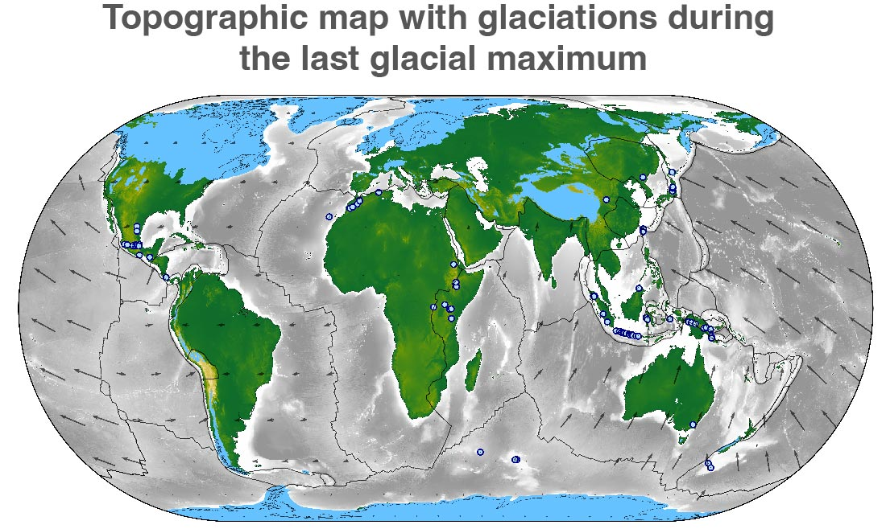

About Me
I am a postdoctoral researcher at the University of Bergen (Norway) in the Geodynamics and Basin Studies group. I’m generally excited by any geoscientific multi-physics problem that exhibits a true interaction of different processes. The tectonic-climate coupling on Earth is such a problem, that combines different fields of geosciences and different processes acting in different domains and on different timescales. My main interest is to understand and specifically quantify this exciting coupling that exists between tectonics, surface processes, and climate, and how it shapes our Earth. To achieve this goal, I primarily use and develop computational tools that combine the physics of tectonics and climate-driven surface processes.
My background is in geodynamics, specifically the dynamics of ocean-continent subduction and continent-continent collsion. From these “deep” processes I gradually moved spatially upwards to include fluvial surface processes, to investigate the exciting interaction between tectonics and fluvial erosion. Most recently, I also started working with the dynamics of glaciers and glacial erosion, which provides one of the missing links to quantify the tectonic-climate coupling on Earth.
This Homepage focusses on my research. For further information on other topics please have a look at my CV (icon in lower right corner).
Research
Coupling tectonic and surface processes models

In the last decade, modelling fluvial erosion and hillslope processes on geological timescales has become well established, so that stable, efficient, and computationally inexpensive numerical models and software packages based on the stream power law are now readily available. One such example of an efficient surface processes models is FastScape. Similar to the development of fluvial erosion models, thermo-mechanical modelling of lithosphere deformation and mantle processes with complex, non-linear rheologies has become readily available in the last decade in 2D and 3D. I developed the first coupling between the fluvial surface processes model FastScape and a thermo-mechanical model, specifically the 2D and 3D thermo-mechanical models FANTOM (2D) and pTatin3D (3D). These models allow me and my co-authors to investigate the complex and non-linear dynamics of the interaction between tectonics and climate-fueled fluvial erosion. I recentely worked together with Guillaume Cordonnier, who developed a new algorithm to solve ice-flow in glaciers using unsupervised machine-learning-enhanced solvers, to build the first coupled tectonic-surface processes model that includes realistic glacial erosion. I'm very excited about this new tool as it opens a new research avenue that I plan to explore in the near future.
Collaborators: Dave A. May, Guillaume Cordonnier
The interaction between surface processes and tectonics
{kind=link}
One of the most exciting discoveries within geoscience over the last 30 years are the couplings and feedbacks that exist between surface processes, tectonics, and climate on Earth. Understanding the nature and feedbacks of the interaction between climate-fuelled surface processes and tectonics has often been approached either from a surface processes perspective, or from a tectonic perspective. The coupled tectonic-surface processes models that I developed bridge this gap and allow investigating a real coupling between both domains. Using the coupled models, I demonstrated together with my co-authors the conditions under which either fluvial erosion or tectonics limit mountain belt height on Earth. To this end, we developed the new non-dimensional Beaumont number, and inferred the importance of tectonics versus surface processes in ten mountain belts on Earth. In very recent work, I investigated how Milankovich orbital forcings in climate influence the height and sediment flux in collisional orogens subject to fluvial erosion (in prep); ongoing collaborations expand on the coupled models to include other geodynamic contexts or additional complexity in the surface processes.
Collaborators: Jean Braun, Ritske S. Huismans, Xiaoping Yuan,
Geodynamics of various plate tectonic regimes
{kind=link}
Plate tectonics is the fundamental expression of the deformational regime on Earth. There are three types of plate boundaries: divergent, convergent, and transform boundaries. I'm generally interested in how these boundaries form. While I have mostly worked with convergent boundaries, specificallu continent-continent collision and ocean-continent subduction, I have also worked on divergent boundaries through ongoing collaboration at UiB and GFZ Potsdam. Typically, I use thermo-mechanical modelling in 2D or 3D to investigate lithosphere-scale processes and I'm particularly passionate about quantifying my modelling results through simple force considerations or a non-dimensional analysis.
Collaborators: Ritske S. Huismans, Thomas Theunissen, Zoltan Erdős, Lorenz Wolf
Glacial erosion
{kind=link}
The importance of glacial erosion on the evolution of topography on Earth is one of the large unknown questions. While present-day erosion rates indicate that glaciers are very efficient agents of erosion, glacial erosion seems not more efficient than fluvial erosion on geological timescales, i.e. when averaged over several glacial cycles. Understanding the mutual interplay between tectonic deformation and glacial erosion is one of the missing puzzle pieces to gain a grip of the tectonic-climate system on Earth. Currently I'm collaborating with Guillaume Cordonnier, Eric Deal and Jean Braun, to develop simple theory and compare different modelling approaches of glacial erosion with the goal of using coupled tectonic-glacial-fluvial erosion models to quantify the potential impact of glacial erosion on landscape evolution in a cooling climate.
Collaborators: Guillaume Cordonnier, Eric Deal, Jean Braun, Vivi Pedersen Ann Rowan
Publications
Articles under review
- Wolf, S. G., Huismans, R. S., Muñoz, J.-A., May, D. A., “Rift linkage and inheritance determine collisional mountain belt evolution”, Nature Communications, under review
- Wolf, S. G., Huismans, R. S., Braun, J. “Tectonics and Surface Processes during collisional orogenesis - Exploring the parameter space of the Beaumont number”, JGR Solid Earth, under review
- Wolf, S. G., Huismans, R. S., Braun, J. “Tectonics and Surface Processes during collisional orogenesis – Application of the Beaumont number to orogens on Earth”, JGR Solid Earth, under review
- Theunissen, T., Huismans, R. S., Rouby, D., Wolf, S. G., May, D. A. "Inheritance controls highly oblique segmented rifted passive margin formation", Science Advances, under review
Published research articles
- Erdős, Z., Huismans, R. S., Wolf, S. G., Faccenna, C. (2025) “Terrane accretion explains thin and hot ocean-continent back-arcs”, Science Advances, 11, 17 [link]
- Yuan, X. , Li, Y. Q., Brune, S., Li, L., Pons, M., Wolf, S. G (2024) “Coordination between deformation, orographic precipitation, and erosion during orogenic growth”, Nature Communications, 15, 10362, [link]
- Yuan, X.P., Jiao, R., Liu-Zeng, J., Dupont-Nivet, G., Wolf, S. G., Shen, X. (2023) “Downstream propagation of fluvial erosion in Eastern Tibet”. Earth and Planetary Science Letters, 605, 118017, [link]
- Wolf, L., Huismans, R. S., Wolf, S. G., Rouby, D., May, D. A. (2022) “Evolution of rift architecture and fault linkage during continental rifting: Investigating the effects of tectonics and surface processes using lithosphere-scale 3D coupled numerical models”. JGR Solid Earth, 127, e2022JB024687, [link]
- Wolf, L., Huismans, R. S., Rouby, D., Gawthorpe, R. L., Wolf, S. G. (2022) “Links Between Faulting, Topography, and Sediment Production During Continental Rifting: Insights From Coupled Surface Process, Thermomechanical Modeling”. JGR Solid Earth, 127, 3, [link]
- Wolf, S. G., Huismans, R. S., Braun, J., Yuan, X. (2022). “Topographic Evolution of Mountain Belts Controlled by Rheology and Surface Process Efficiency”, Nature, 606, 516–521, [link]
- Yuan, X., Huppert, K., Braun, J., Shen, X., Liu-Zeng, J., Guerit, L., Wolf, S. G., Zhang, J., Jolivet, M. (2022) “Propagating uplift controls on high-elevation, low-relief landscape formation in Southeast Tibetan Plateau”. Geology, v. 50, [link]
- Erdős, Z., Huismans, R. S., Faccenna, C., Wolf, S. G. (2021). “The role of subduction interface and upper plate strength on back-arc extension: application to Mediterranean back-arc basins”, Tectonics, 40, e2021TC006795, [link]
- Wolf, S. G., Huismans, R. S., Muñoz, J.-A., Curry, M. E., van der Beek, P. (2021). “Growth of Collisional Orogens From Small and Cold to Large and Hot — Inferences From Geodynamic Models”. JGR Solid Earth, 126, e2020JB021168, [link]
- Curry, M. E., van der Beek, P., Huismans, R. S., Wolf, S. G., Fillon, C., Muñoz, J.-A. (2021). “Spatio-temporal patterns of Pyrenean exhumation revealed by inverse thermo-kinematic modeling of a large thermochronologic dataset”. Geology, v.49, [link]
- Wolf, S. G., Huismans, R. S. (2019). “Mountain Building or Backarc Extension in Ocean-Continent Subduction Systems: A Function of Backarc Lithospheric Strength and Absolute Plate Velocities”. JGR Solid Earth, 124, 7, p.7461-7482., [link]
- Curry, M. E., van der Beek, P., Huismans, R. S., Wolf, S. G., Muñoz, J.-A. (2019). “Evolving paleotopography and lithospheric flexure of the Pyrenean Orogen from 3D flexural modeling and basin analysis”, Earth and Planetary Science Letters, 515, p.26-37., [link]
Articles in preparation
- Wolf, S.G., Braun, J., Huismans, R. S. “Periodic climatic variations during collisional orogenesis – insights from coupled tectonic-surface-process models”, in prep. for Science, presented at EGU 2024
- Wolf, S.G., Huismans, R. S., Zijerveld, L. "Tectonics vs climate - inverting for the orogenic structure of the Southern Alps of New Zealand", in prep. for Nature Geoscience, not yet presented